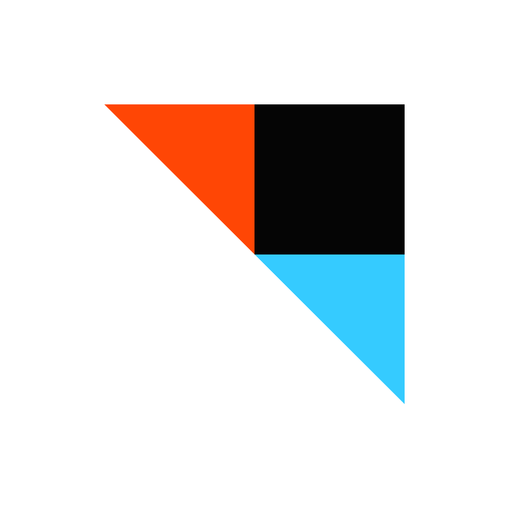
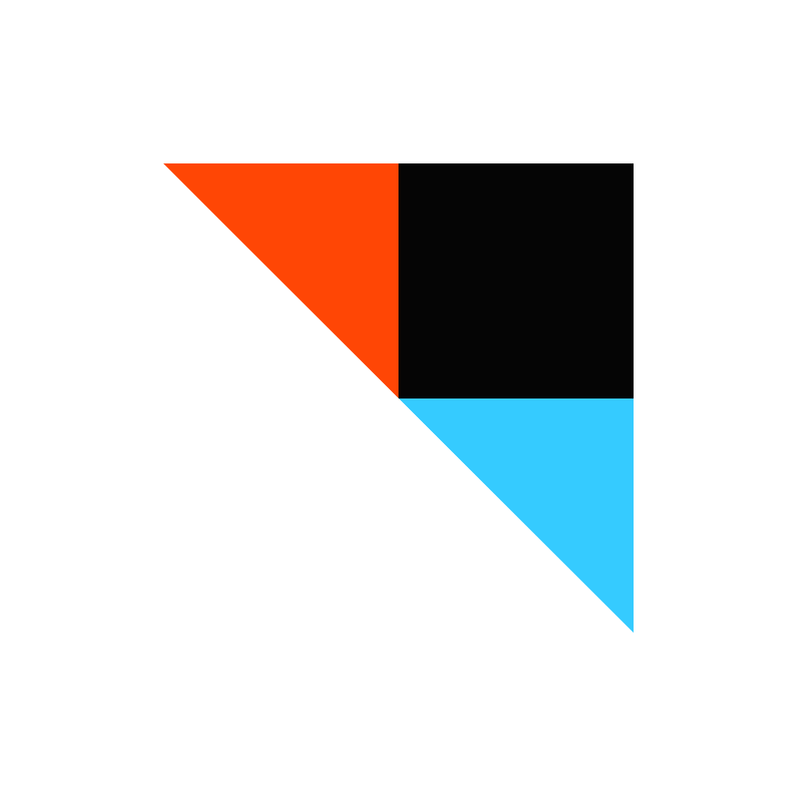
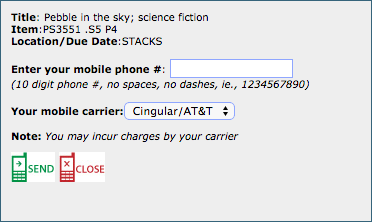
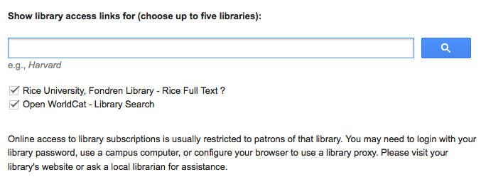

Fondren UX Office
Rice University
Tools for Students & Researchers
 


SMS Book Finder and Notifications
Use text messaging to locate your book in the library stacks. Also, set up text message notifications for book recalls, overdues, pick-ups, and reminders.
Example
From a book's reference in the catalog, click "Text this Record".
Citation Management
Learn how to use Zotero and Mendeley to sync your research sources across devices amongst groups.
EasyBib is a citation creator available online. It is available for iPhone and Android for scanning book bar codes.
Check out Fondren's Libguide on Research Paper Management for more info.
IFTTT: Task Automation
Automate due date reminders and bibliography creation on your phone with IFTTT.
Browser Plugins for Online Searching and Resource Linking
Link your computer's internet browser with your library's catalog to discover accessible sources as you explore websites. Get Rice's Plugin.
Google Scholar & Library Access Links
Change your Google Scholar settings to include your institution's subscriptions for easier access to full text journal articles.
Go to scholar.google.com. Go to Settings > Library Links. Search for your institution, and log into your network account.
Here's a screenshot for reference:
